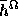
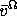
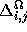
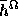
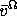
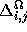

The integration model is the same as that depicted in Figure 7
except that it is executed for each resolution  . We compute
 and  using the difference image
 (Figure 6, and (6)). The image at different resolutions
(Figure 5) is input to the matching module.
. We compute
 and  using the difference image
 (Figure 6, and (6)). The image at different resolutions
(Figure 5) is input to the matching module.